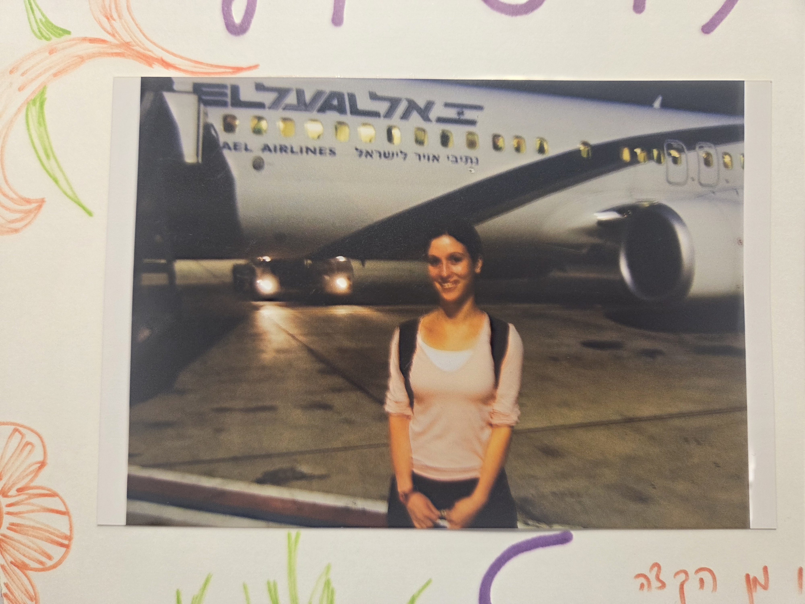

מנקודת אור לממלכה

מהטיול הבלתי נשכח עם בובי ועד היעדים הבאים — 40 מקומות חלומיים בעולם ובארץ, בארבע קטגוריות. הפוך גלויה וגלה לאן טסים 🧳
כל יעד נחשף בלחיצה · 'הסיפור והמסלול' נפתח כאן בדף — בלי חיפושים
מגיע לך לראות את היופי של העולם כמו שהוא רואה אותך. שנצא יחד להרפתקה הבאה 💛
💌 לחזרה להזמנה